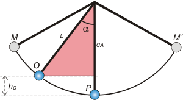

NO ME SALEN
PROBLEMAS RESUELTOS DE FÍSICA DEL CBC
(Leyes de conservación, energía mecánica)
|
|

|
 |
2.20 - Un péndulo simple de 64 cm de longitud,
cuya lenteja tiene una masa de 0,2 kg, pasa por
una posición (O) tal que el hilo forma un ángulo
de 37° con la vertical.
a- Si su velocidad en ese punto es 1,2 m/s, hallar
qué velocidad tendrá al pasar por el punto
más bajo (P).
b- Cuál deberá ser su mínima velocidad en O,
para que en algún instante el hilo se halle horizontal
(posición Q). |
|
c- Para el caso a: cacule la tensión del hilo en
O y en P. Para el caso b: calcule la tensión en Q.
Te debe quedar claro que nos están hablando de dos transformaciones diferentes, las oscilaciones preguntadas en a no se vinculan con las preguntadas en b, no son comparables entre sí. Vamos a la primera |
 |
Ahí tenemos el péndulo oscilando, seguramente entre los puntos M y M´ porque al pasar por O ya tiene una velocidad distinta de cero. De todo modos lo que vamos a hacer nosotros es comparar energéticamente los eventos O y P.
WFncOP = ΔEMOP
Expresión que se lee así: |
|
|
|
el trabajo de todas las fuerzas no-conservativas que actuaron entre O y P es igual a la variación de energía mecánica entre O y P .
Empecemos con el primer miembro. Para saber cuánto vale el trabajo de las fuerzas no-conservativas que actúan entre O y P primero debemos saber cuáles son todas las fuerzas que actúan. Hagamos un DCL. |
|
|
 |
Hay sólo dos fuerzas actuando sobre la lenteja: la fuerza que hace la cuerda, T, y el peso, P. La primera (no quiero entrar en la discusión sobre si en este problema T es o no es conservativa) no realiza trabajo alguno, ya que es en todo momento perpendicular a la trayectoria, luego su trabajo vale cero.
Y la fuerza P es el arquetipo de las conservativas. Por lo tanto
WFncOP = 0 |
|
|
|
Pasemos entonces al segundo miembro
ΔEMOP = 0
EMo = EMp
Eco + Epo = Ecp + Epp
½ m vo² + m g ho = ½ m vP² + m g hP
la masa de la lenteja aparece multiplicando en todos los términos, la cancelamos
½ vo² + g ho = ½ vP² + g hP
la altura de P la elegí convenientemente igual a cero. Igual quedan dos incógnitas, una es la que pide el enunciado del problema, vp, pero hay otra que no sabemos, ho. Pero por otro lado hay algunos datos del enunciado que no usamos y en base a ellos podemos expresar ho y superar el inconveniente. Prestá atención, sólo se trata de una pavada trigonométrica, pero aparece con cierta frecuencia.
Mirá el triangulito que te voy a marcar en color.
|
|
|
|  |
Es rectángulo, no cabe duda. Y la hipotenusa es L, la longitud de la cuerda que es dato, y α también es dato... entonces mirá el cateto adyacente a α, llamémoslo CA.
CA = L . cos α
Si a CA le sumamos ho obtenemos... L |
|
|
|
De modo que
ho = L — L . cos α
ho = L . (1 — cos α)
lo metemos en la última que quedó pendiente y tenemos
½ vo² + g L . (1 — cos α) = ½ vP²
de donde
vP = [ vo² + 2 g L . (1 — cos α) ]½
|
|
| Si podés, contenete y no calcules ho, que no te lo piden. |
|
|
|
|
Ahora vamos a la segunda situación. Fijate que ahora pasa por O con una velocidad diferente de la que tenía antes. Se está moviendo con otra energía, por eso esto no lo podemos vincular con lo anterior. Lo que tenemos que hacer es vincular energéticamente las situaciones O y Q de este proceso.
WFncOQ = ΔEMOQ
Las fuerzas que actúan son las mismas de antes, eso no cambió. De modo que el problema sigue siendo de tipo conservativo, el primer miembro de la ecuación vuelve a ser cero. Por lo tanto
EMo = EMQ
ECo + EPo = ECQ + EPQ
½ m vo² + m g ho = ½ m vQ² + m g hQ
|
|
|
 |
Si me preguntan por la mínima velocidad en O, se tratará de aquella que le alcance para llegar a Q, justito, justito, sin nada de energía cinética. O sea que la velocidad de Q ha de ser cero.
La altura de Q, no es otra que L, la longitud del hilo. |
|
|
|
la masa vuelve a cancelarse (es notable que la cinética del péndulo sea independiente de su masa...)
½ vo² + g L . (1 — cos α) = g L
½ vo² = g L — g L . (1 — cos α)
½ vo² = g L [ 1 — (1 — cos α) ]
½ vo² = g L ( 1 — 1 + cos α)
½ vo² = g L cos α
vo = (2 g L cos α)½
|
|
|
|
|
|
Para calcular la tensión del hilo en los casos planteados, hay que recurrir a Newton. Al plantear la 2da ley para la dirección centrípeta quedará
TP — P = m . aC
TP = m . g + m . vP² / L
TP = m . (g + vP² / L )
|
|
|
|
|
|
| En la situación Q, lo hacemos mentalmente. Acordate que ahí la velocidad es cero. |
|
|
|
|
|
Te juro que es así. No lo soñé -¡ieee-eeeeh!
DISCUSION: Este problema fue larguísimo, así que no me da ganas de discutir nada. Fijate solamente una cosa en la que muchos meten la pata por no decir la cola: siempre que haya movimiento circular, la fuerza que tira hacia adentro tiene que ser mayor que la que tira hacia afuera. Eso se ve clarito en el caso inicial, cuando calculamos la tensión en P. Si TP no fuese mayor que el peso no podría estar girando. Bueno, por algún motivo todos los novatos muestran una tendencia irrefrenable a pensar que en ese punto T y P son iguales. Cosa´e mandinga. |
|
 |
| DESAFIO: Primero, calculemos la altura de O y de M de la situación a. Segundo, seamos osados y vinculemos las dos situaciones narradas en el problema... ¿Qué habría que agregar, y cuál sería su valor, para pasar de la situación inicial a la posterior? |
|
| Algunos derechos reservados.
Se permite su reproducción citando la fuente y haciendo reproducciones decentes... nada de fotocopias pedorras en blanco y negro todas borroneadas donde no se me vea guapo, como soy. Última actualización oct-06. Buenos Aires, Argentina. |
|
|
|